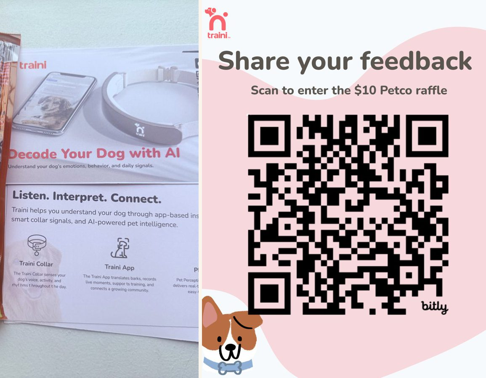
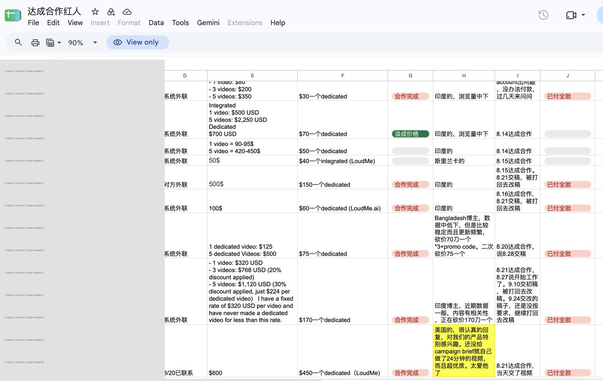
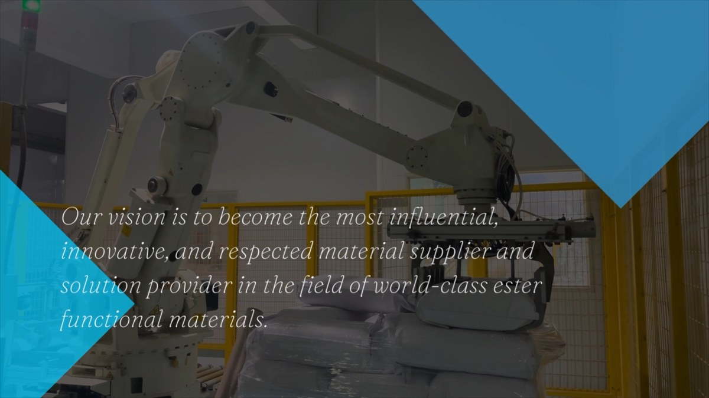

Four projects, four different growth problems.
From full-funnel social growth for a company's own travel brand, to 0→1 field experiments for an early-stage startup, to building a B2B manufacturer's overseas presence from scratch. Each one below is a real case study — process, decisions, and numbers included.

Reviving a dormant travel brand's Xiaohongshu channel
Owned product selection, content, and paid social for the company's own dormant Xiaohongshu (RedNote) travel brand account — end to end.

Turning an ambiguous growth problem into a real-world experiment
Audited Traini's growth funnel, then designed and ran a NYC field pilot with real dog owners to test messaging, trust, and activation.

Matching the right creators to the right AI product story
Supported YouTube creator marketing across CocoSoft's AI portfolio, then earned ownership of LoudMe.ai's creator campaign before its public launch — from segmentation to negotiation to performance optimization.

Making a technical B2B product easier to find, understand, and buy
Translated technical product features into buyer-facing messaging, improved B2B listing discovery, and supported outreach with sales content and prospect research.